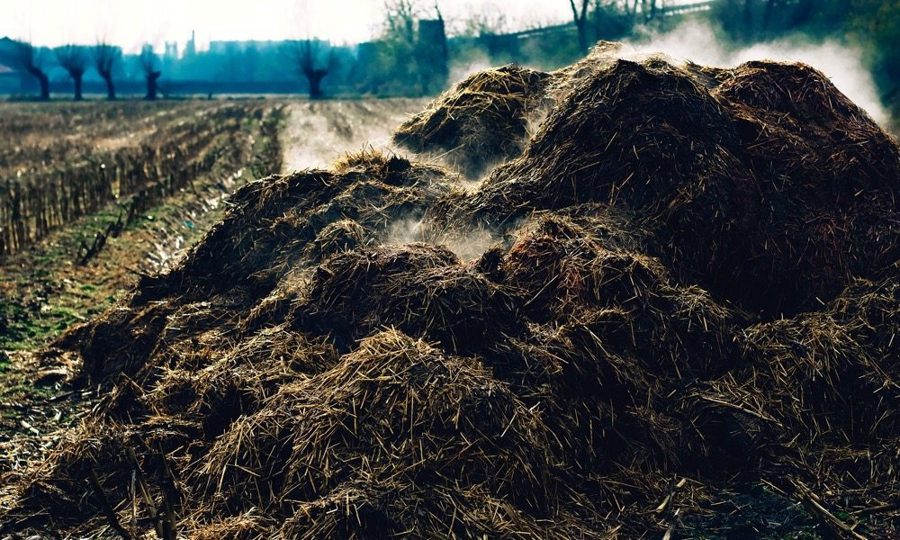

Below are the enlisted products that we are dealing with. Each product has been attached with the willing customers who are selling them and their locations, You can communicate directly to the farmer and agree on terms and conditions.
Meat is valued as a complete protein food containing all the amino acids necessary for the human body .The fat of meat, which varies widely with the species , quality, and cut, is a valuable source of energy and also influences the flavour, juiciness, and tenderness of the lean. Parts such as livers, kidneys, hearts, and other portions are excellent sources of vitamins and of essential minerals, easily assimilated by the human system.Our farmers offer variety of meat and products including game meat. We carefully examine the legitimacy of every product at hand and the efficiency of each farmer in terms of delivery to our clients.
We help farmers to increase their harvests (interms of poultry farming), this involves egg production and all sorts of poultry production. This is by ensuring available and ready market to all the farmers. We also make sure that you, the customer gets the best kind of services and products by vettig our farmers(those registered under us) to offer the best possible services to our clients .
Farmers space business involves the procurement of high quality raw milk which is then sold to the various clients. We also offer farmers that give off processed milk leaving the choice of product to the given client. From the farm to your disposal we ensure professionalism amongest our farmers at all times. Our farmers also offer milk products such as butter cheese flavoured and unflavoured long life milk
We have a selection of African game skins that have been legally gathered and tanned in leading Kenyan tanneries. Our farmers are registered with the relevantt Wildlife authorities here in Kenya which the local conservation authorities in our area and they check to make sure that the skins sold are legally obtained and allowed for local or export purposes.If there is any product that you may be interested in, irrelevant of shape or size we try our best to get you connected to the relevant farmers. Most of our goods that you do order are unique and made by genuine dealers who use this as their source of income.
Our organization is focused on wholesale distribution of FMCG Products. By optimizing operations using IT solutions to connect people and processes. Our business approach is to retail quality goods at competitive prices. We endeavor to minimize our operating costs in several ways such as employing an efficient logistics and distribution system and maintaining a strong focus on product assortment to minimize inventory build-up, supported by efficient store operations backed by Farm Linkages for Horticultural produce. Through our farmers this gets to be an archievement towards offering the best client experience ever.Farmers space continues to save our Customers money on all their grocery needs. The Freshmart. FreshMart has made it easier to buy the right foods and live a better healthy life!
Our line of organic fertilizers from our farmers offer an eco-friendly management of turf and permits to drastically reduce the chemical component of fertilization. The special composition provides organic matter rich in humic acid and amino-acids essential to photosynthesis. The bacterial microflora they contain helps the processes of humification and mineralization, therefore the transformation of the undecomposed organic substance in assimilable nutrients, allows the degradation of the felt and the mobilization and use of all minerals accumulated in the soil with the previous chemical treat. The moderate but steady growth allows to drastically reduce cuttings.
